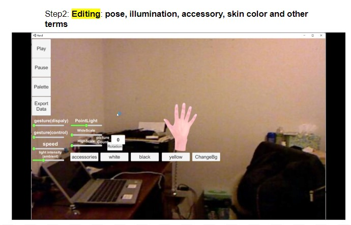

Abstract
Video
Comparison between DART and MANO basic topology.
 that drive the template hand mesh in MANO can be used as a direct placement for DART without
any modifications.
that drive the template hand mesh in MANO can be used as a direct placement for DART without
any modifications.

How to use DART tool in generating your own data?
Step1: click DART
GUI & Code and download Build_Hand.zip.
Step2: Pose Editing: allow arbitrarily, illumination, accessory, skin color and other terms.

Step3: Exporting: rendered image with GT(mano pose, 2d/3d joint are put into the output.pkl)
DARTset
Dataset Organization
- Rendered Image: with background (384x384), without
background RGBA (512x512).
- Annotation: 2D/3D positions for 21 keypoints of the hand, MANO pose, vertex
locations.
DARTset is composed of
train and test. The folder of each is described as
below.
Train set
* Train: 729,189 single hand frames, 25% of which are wearing accessories.
Test set
* Test (H): 288,77 single hand frames, 25% of which are wearing accessories.
Total set
* DARTset: 758,066 single hand frames. Noteworthy here, we conduct experiments on full 800K DARTset and filter out ~42,000 of images which left wrist unsealed on the final version.
Pose sampling we use spherical
linear interpolation (Slerp) in pose and root rotation sampling. Among these hands, ~25%
are assigned an accessory. In DARTset, basic UV map (skin tones, scars, moles,
tattoos) and accessories are all uniformly sampled, the number of their corresponding
renders are roughly equal.
Download: Dropbox link (Train & Test)
Toolkit
For data visualization and usage, please refer to DARTset toolkit.
License
Codes are MIT license. GUI(Unity) tools are CC BY-NC 4.0 license. Dataset is CC BY-NC-ND 4.0 license.
Acknowledgements
The website template was borrowed from Michaël Gharbi.